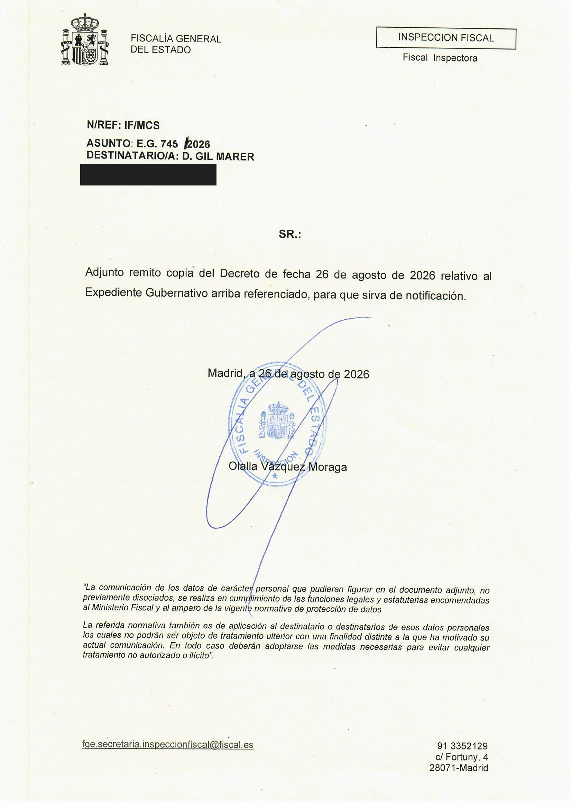
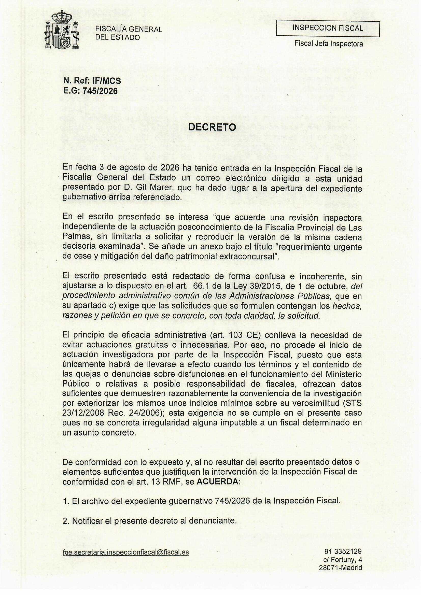
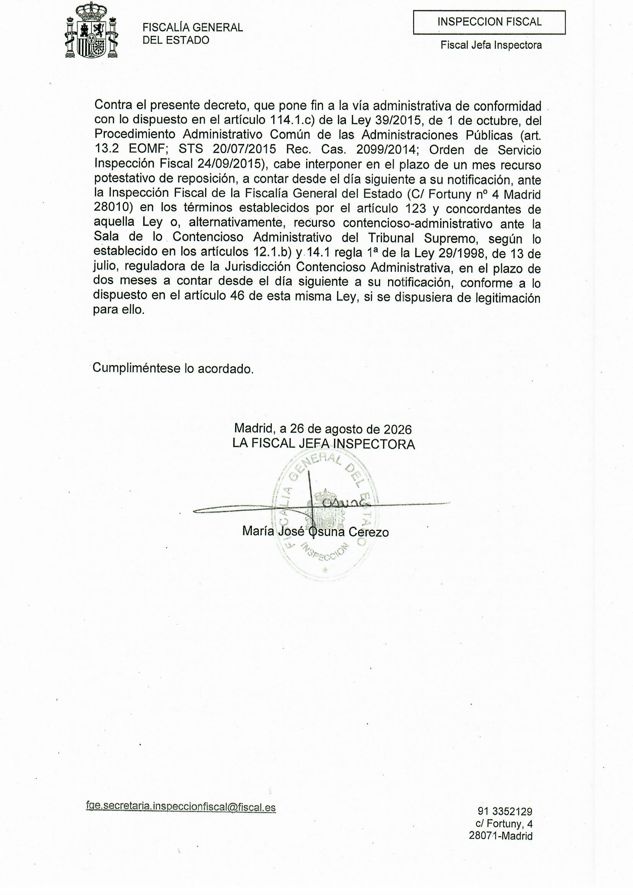

PRIMARY SOURCE · PRIVACY-CONTROLLED VISUAL DERIVATIVE
Fiscal Inspection E.G. 745/2026 — visual facsimile of all three pages.
These images derive from the official PDF OFICIO Y DECRETO EXP. 745-26.pdf notified on 26 August 2026. They are not a typeset recreation. On page 1 only the recipient's personal email address is masked; the institutional text, dates, signatures and Decree content remain visible.
6dc04a8a35c4a096631ca1852ec5fbee96c4965f (tree 05b59b3f8ea073150022ff2815f4e45f2b88ce95); Pages run 33411821984 deployed that exact SHA, and PR #1275 readback run 33413265941 matched all 32 changed public files byte-for-byte, including both viewers and all seven derivatives. Open the deployment attestation →Download the 3-page public PDFRead the controlled translation →

{kind=link}

{kind=link}

{kind=link}
SHA-256 fingerprints of the live-verified replacement: PDF a59007fa5db61d2b48b587c208f9cafedabe967e88dac4df223b2ef384595088; WebP P1 ac5ccc51d85d6bfc7933a924465c5ef493206453e822fce2b367433975dee41a; P2 5173cd8420ed9f6b6e1b26f3ad86025d89c82cbc69d4936b0d287f17717ae06a; P3 ae3f518bb5732396e5d19fdcd3ee45450d2ee104e9bf7f7594af3493115bfaa8.